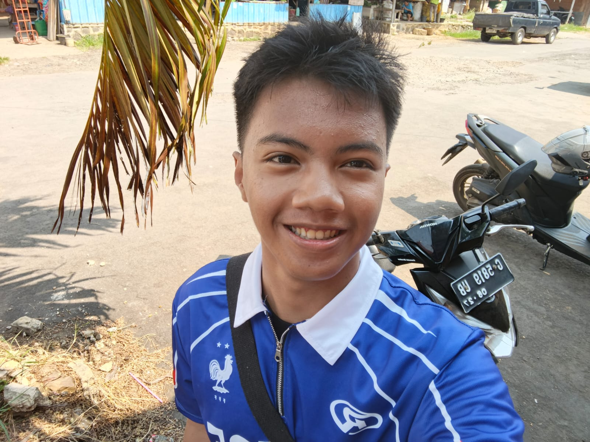

Rizki Muhammad Fadhil
📚 SMK N 1 Kandeman · Pengembangan Perangkat Lunak & Gim
Seorang pelajar yang sedang belajar pemrograman dasar — dan percaya bahwa kebiasaan baik adalah kunci berkembang.
🌿 Tentang HabitKu
HabitKu adalah website tracker kebiasaan harian yang dibuat khusus untuk pelajar Indonesia. Kami percaya bahwa kebiasaan kecil yang dilakukan secara konsisten adalah fondasi dari prestasi besar.
Website ini dibangun menggunakan HTML & CSS murni tanpa JavaScript, sebagai bukti bahwa tampilan yang interaktif bisa dibuat hanya dengan teknologi dasar. Setiap halaman dihubungkan menggunakan hyperlink — konsep paling mendasar dari web!
- ✅ Gratis dan tanpa iklan
- ✅ Kode sederhana dan mudah dipelajari
- ✅ Cocok untuk pemula web development
- ✅ Multi-halaman dengan hyperlink nyata
📬 Hubungi Kami
📧fadhil258729@student.smkn1kandeman.sch.id
📍 Kandeman, Batang, Jawa Tengah, Indonesia
🕘 Everyday (jika saya mood)